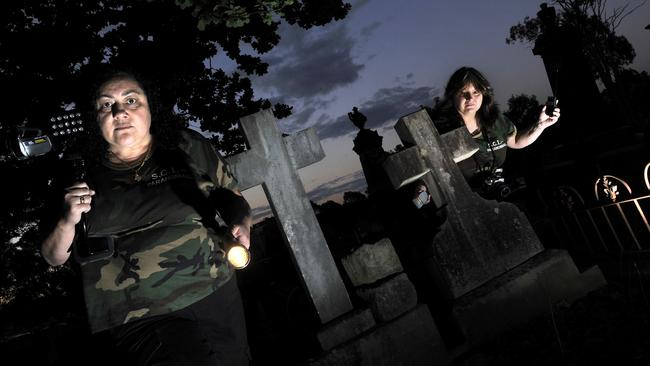

In the south west suburbs of Sydney lies a train station with a grizzly secret. When the last train leaves Macquarie Fields station and the platform is empty, a fain cry can be heard in the breeze. Believers say the station is haunted. For those that find the crying scary to hear - things only get worse. Some say the crying eventually stops and then, after a short pause, it turns to blood curdling screams of anguish. On some occasions, people even see the ghost - a teenage girl roaming the platform with dark blood covering her face. She cries and cries then screams and screams. For me though, the creepiest part is that sometimes, she stares right at you.
Ghost hunters say it’s quiet at first but soon becomes much louder, sometimes accompanied by the terrifying spectre of a teenage girl wearing dancing clothes stained with blood. One group, the Sydney Spirit Stalkers — who “stalk the paranormal” — say the sounds are the “moans and groans of a young girl in her teens,” who comes out when the platforms are “nearly empty.” The haunting is reminiscent of the phantom girl in a white dress, who haunts the Wakehurst Parkway on Sydney’s northern beaches.
Another paranormal website, Urban Ghosts Media, has also investigated the Macquarie Fields platforms, including them in a list of ten “creepy phantoms and urban legends”. Their website reports “faint crying” carried on the breeze after the last train pulls out. “As the night passes, you can sometimes hear the crying abruptly stop and change to hideous screams,” their post said. “A handful of people have reported seeing a ghostly teenage girl roaming the platform (with) a dark splatter of blood covering her front.”